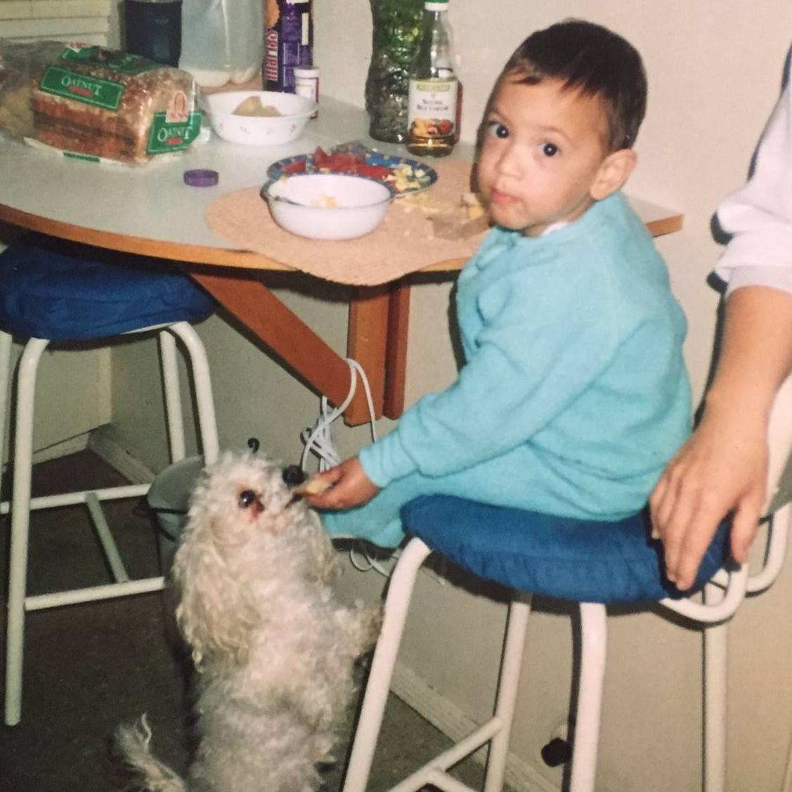
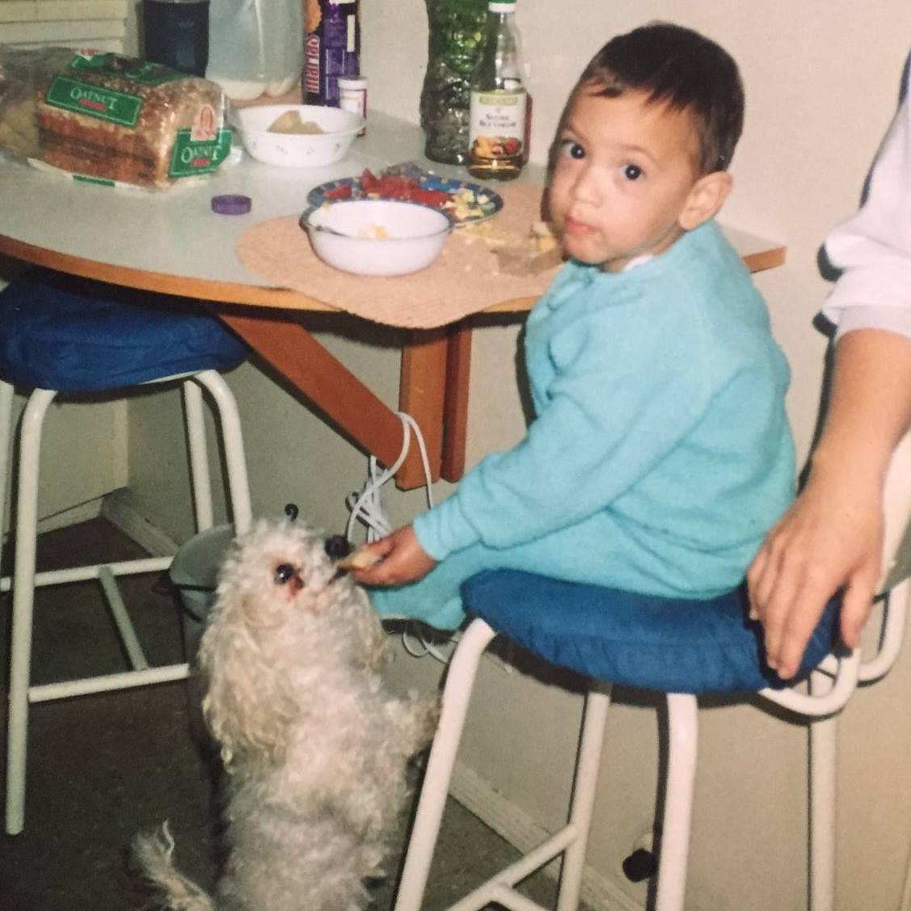
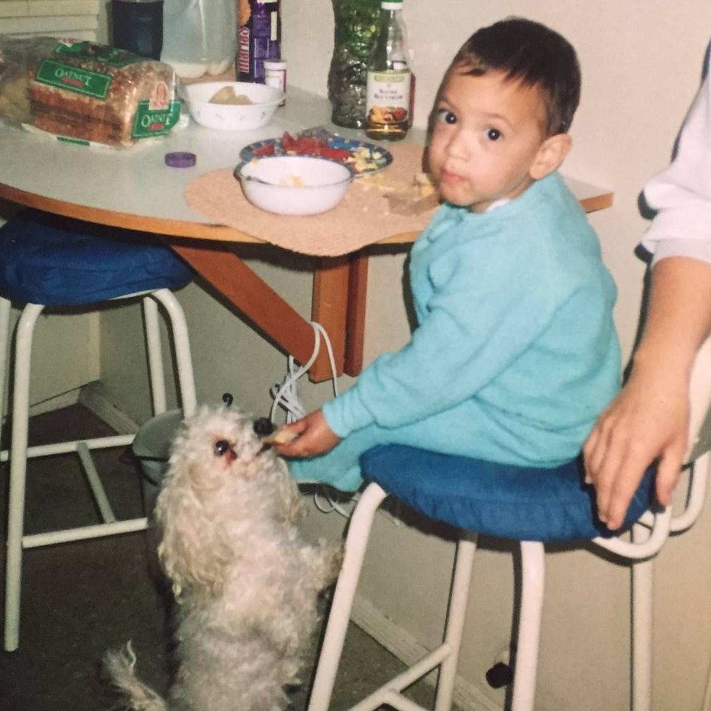

Home
Writing
Projects
Speaking
Contact
Speaking
See all my
talk slides
, along with videos & write-ups accompanying some of the talks!
Sometimes my speaker photo.
Sometimes my
other
speaker photo.

Photo of me as a baby! Used for
WaffleJS
.
 Sometimes my speaker photo.
Sometimes my speaker photo.
 Sometimes my other speaker photo.

Photo of me as a baby! Used for WaffleJS.
Sometimes my other speaker photo.

Photo of me as a baby! Used for WaffleJS.